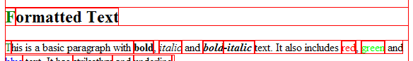
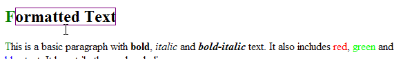
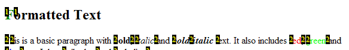

Onscreen Information
Common display options and when they are useful

Visual debugging
for box size errors

Event debugging
for problems with links not working

Reflow Statistics
when you have missing reflows